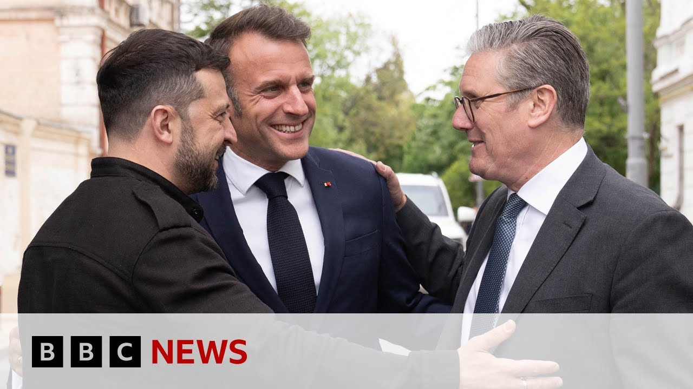

来B站一起耍【Global每日英语简报】
【英国首相斯塔默与多国领导人齐聚乌克兰呼吁停火 | BBC新闻】
Summary: World leaders agree to a 30-day ceasefire starting May 12, backed by Trump, and threaten sanctions if Russia refuses.
摘要： 多国领导人同意自5月12日起实施30天无条件停火，并威胁若俄罗斯拒绝将实施新制裁。

⏱️ Estimated Reading Time: 15 min
The leaders of Britain, France, Germany, and Poland have agreed on Saturday to an unconditional 30-day ceasefire from the 12th of May with the backing of Donald Trump.
英国、法国、德国和波兰领导人周六在唐纳德·特朗普的支持下，同意自5月12日起实施30天无条件停火。
They also threatened President Vladimir Putin with new massive sanctions if he failed to comply.
他们还威胁称，若弗拉基米尔·普京总统拒绝遵守，将实施新的大规模制裁。
The announcement was made by the leaders of Britain, France, Germany, and Poland, and Ukraine after a meeting in Kiev during which they held a phone call with Mr. Trump.
这一声明由英国、法国、德国、波兰及乌克兰领导人在基辅会晤后发布，期间他们与特朗普进行了电话沟通。
Well, as we've been reporting, Sakir Stalmer was among the leaders who went to Kiev to meet President Zalinski.
正如我们报道的，萨基尔·斯塔默是前往基辅会见泽连斯基总统的领导人之一。
Our chief political correspondent, Henry Zeman, also went to Ukraine, and he spoke to the prime minister.
我们的首席政治记者亨利·泽曼也前往乌克兰，并对首相进行了采访。
Here's what they said.
以下是他们的对话内容。
Prime Minister, we saw yesterday in Russia, the leaders of China, Brazil, even an EU leader from Slovakia line up with Vladimir Putin in Moscow.
首相先生，我们昨天看到在俄罗斯，中国、巴西领导人甚至斯洛伐克的欧盟领导人与普京在莫斯科站在一起。
To what extent was you coming here with European leaders today a direct response to that?
您今天与欧洲领导人一同到访，在多大程度上是对此的直接回应？
Well, it was a hugely important symbolic day here in Kev because, as you say, there was a propaganda exercise in Moscow yesterday.
今天在基辅是具有重要象征意义的一天，因为正如你所说，莫斯科昨天进行了宣传造势。
Today, we're able to demonstrate um that Europe stands with Ukraine.
今天我们能够展示欧洲与乌克兰站在一起。
You had, you know, the UK represented France, Germany, Poland, and of course here with President Zalinski and many others that joined the call virtually.
英国、法国、德国、波兰的代表在场，当然还有泽连斯基总统以及许多通过线上参会的领导人。
So um 80 years on from VE date, it was really important that we were here today.
因此，在二战胜利80年后的今天，我们的到来意义重大。
Um we actually made material progress in relation to a ceasefire.
我们在停火问题上取得了实质性进展。
So that is an extremely good outcome.
这是一个非常好的结果。
But it was also important to demonstrate that the values that underpinned what was being fought for 80 years ago were the same values now and that we will step up and play our part to preserve the peace and bring about that ceasefire.
但同样重要的是表明，80年前为之奋斗的价值观如今依然相同，我们将挺身而出，为维护和平和实现停火贡献力量。
It's an impressive show of unity, no doubt.
这无疑是一次令人印象深刻的团结展示。
But Dmitri Medvidev, the former Russian president, has already said, "Shove these peace plans."
但俄罗斯前总统梅德韦杰夫已表示“这些和平计划见鬼去吧”。
So, aren't they just another act of symbolism?
那么，这是否只是又一次象征性举动？
Well, we haven't seen unity like this pretty well throughout the conflict.
在这场冲突中，我们从未见过如此程度的团结。
So, to get um the European allies, um US, but Russia is saying, "Shove these peace, Canada all on one page."
因此，让欧洲盟友、美国——尽管俄罗斯说“这些和平计划见鬼去”——加拿大全部立场一致。
um you know Putin of course um cannot be trusted but this now is a unified call for an unconditional ceasefire backed up by sanctions.
当然普京不可信任，但现在是国际社会一致呼吁无条件停火，并以制裁作为后盾。
Now there are sanctions in place at the moment they're already having an impact on the Russian economy.
现有制裁已对俄罗斯经济产生影响。
Uh so by further coordinating sanctions um on oil on fossil fuels etc will make a material difference.
进一步协调对石油、化石燃料等的制裁将产生实质性影响。
So you've got unity in the demand um but also unity in what the response will be if the demand is not met.
不仅在要求上团结一致，也在若要求未被满足时的回应上团结一致。
We haven't seen that sort of unity during this conflict and I'm really pleased that we've been able to bring people together in this way for what feels I think for all parties concerned uh to be a really significant moment.
这场冲突中我们从未见过这种团结，我很高兴能以这种方式凝聚各方，这对所有相关方都是重要时刻。
and do do all those parties include President Trump?
这些相关方是否包括特朗普总统？
Obviously you had him on Emanuel Macron speaker phone earlier.
显然你们早些时候通过马克龙的扬声器电话与他通话。
Is he growing increasingly exasperated with President Putin?
他是否对普京总统越来越不满？
I think it's important to appreciate that it was President Trump that first made the proposal for the 30-day unconditional ceasefire.
重要的是认识到，特朗普总统最先提出30天无条件停火的建议。
President Zalinsky signed up to that two months ago.
泽连斯基总统两个月前同意了该提议。
Um and we spoke to President Trump um after our meeting here.
我们在此次会议后与特朗普总统进行了交谈。
Um and I'm absolutely clear that we're aligned um in relation to this in relation to um his relationship with President Putin.
我十分清楚我们在此事上立场一致，包括他与普京总统的关系。
Well, he will better describe it than me, but I do think that um he's absolutely clear that this is a demand that must be met.
他本人能更好地阐述，但我认为他非常清楚这是一项必须满足的要求。
You've nudged in some way, haven't you? You personally have.
您在某种程度上推动了此事，对吗？您个人发挥了作用。
Well, look, I think collectively we've been engaged with um President Trump and his um team for some time.
我们集体与特朗普总统及其团队已接触一段时间。
We're constantly in touch um with them.
我们保持持续沟通。
But what matters to me is not who moved who, um, but actually have we been able collectively to get to a much better position and a unified position today that holds out a better prospect of a ceasefire, uh, which is desperately needed.
但关键不在于谁推动了谁，而在于我们能否共同达成更有利的立场，形成今日的统一立场，为亟需的停火带来更好前景。
Nobody wants a ceasefire more than Ukrainians who've paid a terrible price for the conflict over the last three plus years.
过去三年多，乌克兰人为冲突付出惨重代价，他们比任何人都更渴望停火。
Have we got a step closer to that? Yes, of course.
我们是否更接近停火？当然。
You know, I'm not going to pretend this is the end of the process, but this is a significant uh moment.
这并非进程的终点，但这是一个重要时刻。
We need now to push on and make sure this happens.
我们现在需要推进并确保其实现。
As you say, the war has been going on here for more than 3 years.
如你所说，这场战争已持续三年多。
I think people see the Middle East and they see a situation there which only seems to be going worse.
人们看到中东局势似乎正进一步恶化。
People will be concerned about India and Pakistan.
人们也会担忧印度和巴基斯坦。
I think a lot of people watch the news in Britain and they get scared about the state of the world.
许多英国民众观看新闻后对世界局势感到恐惧。
Do you feel scared about the state of the world?
您对世界局势感到恐惧吗？
Well, I I do think that across the country there is a a concern about the instability around the world and people are talking more about that instability.
我认为全国上下都对全球不稳定感到担忧，人们更多讨论这种不稳定。
We are living in a more uncertain world.
我们生活在一个更不确定的世界。
Um, and we're in a different era on defense and security.
我们在防务与安全领域进入不同时代。
I think that what that requires is leadership is stepping up, pulling countries uh together.
这需要领导力，将各国凝聚起来。
That's why President Macron and I um put together the coalition of the willing to show that Europe would step up and play our part because I feel very strongly that uh we shouldn't only commemorate and celebrate what happened 80 years ago.
因此，马克龙总统与我组建“意愿联盟”展示欧洲将挺身而出，因为我们不应仅纪念80年前的胜利。
Our task is to remember the lessons of 80 years ago and we now have to step up to leadership positions to make sure that for decades to come people enjoy uh the peace that I've enjoyed during my uh lifetime.
我们的任务是铭记80年前的教训，现在必须担当领导角色，确保未来数十年人们享有我一生中所享有的和平。
And so there's a real sense that we must now play our part and I'm determined that the United Kingdom will be leading on that.
因此我们深感必须贡献力量，我决心让英国发挥领导作用。
Does the state of the world keep you up at night?
世界局势会让您夜不能寐吗？
No, it doesn't. because um it's really important that I focus on what I can do bringing people together making significant steps uh today making sure we're preparing with Ukraine what might happen next because if there is a is a ceasefire going to have to respond very very quickly because what I don't want to see is a ceasefire that lasts a matter of days or weeks or months.
不会。因为我需专注凝聚各方、推动实质进展，与乌克兰为后续做准备。若停火实现，必须迅速响应，因我不希望停火仅持续数日、数周或数月。
We need a lasting peace.
我们需要持久和平。
Um and that is really important not just in Ukraine but for everybody in the United Kingdom because these conflicts have direct impact um on the lives of working people in Britain.
这对乌克兰和英国民众都至关重要，因冲突直接影响英国劳动者的生活。
I'm very very alive to that.
我对此非常清醒。
They've seen their prices go up, their energy bill goes up.
他们面临物价和能源账单上涨。
So the more we can do to play our part in stabilizing uh the world, the better it is for working people in Britain.
因此我们越能助力稳定世界，对英国劳动者越有利。
And so um I understand the concern and the anxiety people have about what is going on around the world.
我理解人们对全球局势的担忧与焦虑。
My job um is to make sure our country is safe and secure and playing my part in ensuring that we deescalate, bring about peace wherever we can um and therefore improve the lives of working people in Britain.
我的职责是确保国家安全，并尽己所能缓和局势、促成和平，从而改善英国劳动者的生活。
Thank you very much.
非常感谢。
Thank you. Karma speaking to Henry Zephan.
谢谢。卡尔玛与亨利·泽凡的对话。
Our correspondent Joe Inwood is here.
我们的记者乔·因伍德在现场。
The ball now in Moscow's court and they have said that the ball can be as Henry pointed out um inserted somewhere I think is the polite way of putting it.
现在球在莫斯科一方，他们表示可以如亨利所指——委婉地说——将球塞到某处。
They were not that impressed so it seems.
他们似乎并不买账。
That's Dmitri Pescov the the Kremlin spokesman.
克里姆林宫发言人佩斯科夫表示。
He has essentially said uh this is not going to fly.
他基本称该提议行不通。
I think it was Medviev the former uh president who said that where it could be inserted.
我想是前总统梅德韦杰夫说过塞到哪里。
Um and the the general tone that we're getting from Moscow is well look what we have our preconditions and those preconditions one of the ones they've set out already uh is no more European arm shipments and then maybe we can talk.
莫斯科的总体态度是：我们有前提条件，包括停止欧洲武器运输，才可能谈判。
But they've always had a large number of preconditions and and I don't think anything we've seen today is going to change that.
但他们一贯提出大量前提条件，今日之事不会改变这一点。
I think the really crucial thing that we need to look for out of this event and it is fair to say this was this is symbolically important.
此次活动的关键在于——公平地说——其象征意义重大。
This is a a way of mirroring the events we saw for Russia's victory day parade yesterday with a similar number or a large number of European leaders there offering their their support to Ukraine.
这是对昨日俄罗斯胜利日阅兵的呼应，众多欧洲领导人展示对乌克兰的支持。
The other thing is it's Europe reinserting itself into this conversation because when Donald Trump came in, he essentially bypassed Europe.
另一层意义是欧洲重新介入对话，因特朗普此前绕开了欧洲。
There were talks negotiated and discussions that didn't have any European leaders there.
一些谈判和讨论没有欧洲领导人参与。
Europe has said, "No, we matter here and we're upping our defense spending as a consequence."
欧洲宣称：“我们很重要，并因此增加防务开支。”
But what still matters is what the US says.
但美国的表态仍至关重要。
Now, I've just been looking at the the social media feed of President Trump on his own Truth Social site, and so far we've got lots of things being talked about, but not this.
我查看了特朗普在Truth Social的账号，目前尚未提及此事。
Yeah. And you wonder, is there a meaningful change in US approach?
这让人质疑美国立场是否有实质变化。
Well, I think when there has been a a softening or changing of the language over the last few weeks, we had of course just the quick timeline.
过去几周美方措辞有所软化，时间线很紧凑。
We had that appallingly confrontational meeting between President Zilinsky and Trump.
泽连斯基与特朗普曾有过一次极不愉快的会晤。
Things got a little better subsequently with that meeting in the Vatican.
随后在梵蒂冈的会晤略有改善。
And there has been a softening of the language over the last, you know, couple of days, couple of weeks with JD Vance saying that America asked too much whether they're going to and and of course they also want this 30-day ceasefire, the one that the Ukrainians have said they'll accept, the Europeans have said they'll accept.
过去几天或几周措辞趋缓，如JD·万斯称美国要求过多。当然美方也支持乌克兰和欧洲接受的30天停火。
The the American the Washington um the Americans have always said they'll accept that.
华盛顿方面一直表示接受该提议。
So are they going to put pressure on to force the Russians or if they can to to try and sign up to that?
那么他们是否会施压俄罗斯尝试签署？
That's what we really need to see.
这正是我们需要观察的。
Joe, for the moment, thank you Joe.
乔，目前就这些，谢谢。
Inward.
因伍德。